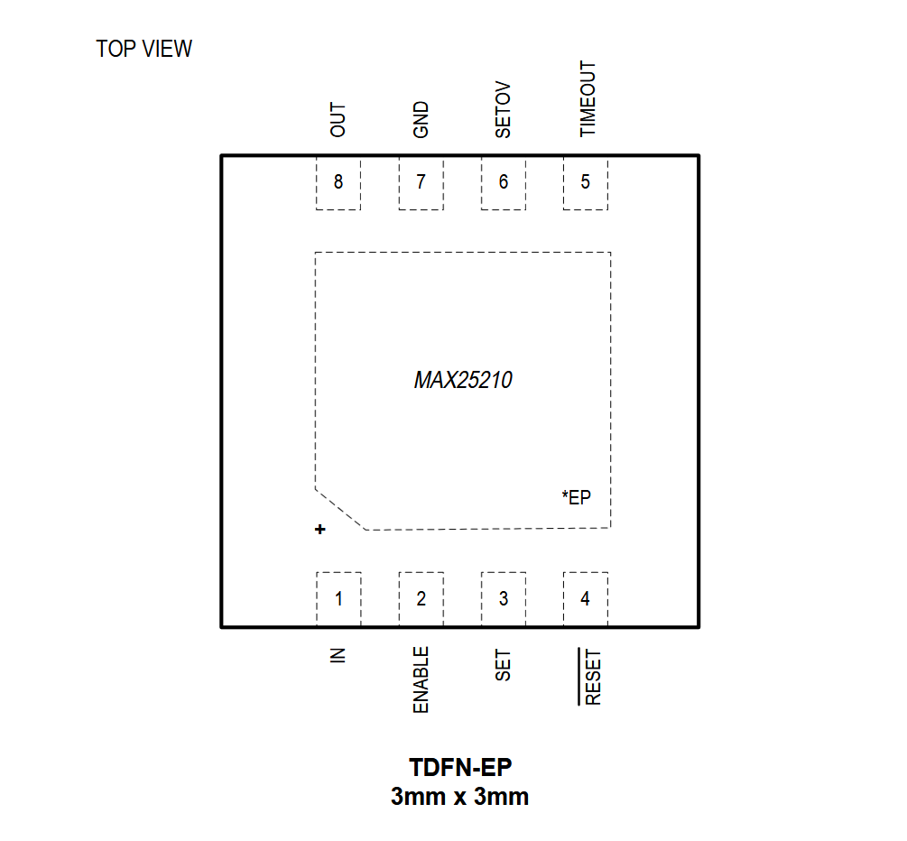

MAX25210

Pin Description
| PIN | NAME | FUNCTION |
|---|---|---|
| 1 | IN | Regulator Input. Bypass IN to GND with a 1μF (min) low-ESR ceramic capacitor. |
| 2 | EN | Active-High Enable Input. Force ENABLE high (or connect to IN) to turn the regulator on. Pull ENABLE low (or leave unconnected) to place the device in a low-power shutdown mode. ENABLE is internally pulled down to GND through a 0.25μA current sink. |
| 3 | SET | Feedback Network Selector. Connect SET to GND when operating the MAX25210 in fixed output voltage mode (3.3V or 5V) using the internal feedback network. Connect SET to IN or any voltage higher than 2.4V when an external feedback network (resistive divider) is used, operating the MAX25210 in adjustable output-voltage mode. |
| 4 | RESET | Active-Low, Open-Drain Reset Output. RESET asserts low when OUT is below the reset threshold, and remains low for the duration of the reset timeout period after the reset conditions end. RESET also asserts low when ENABLE is low and during thermal shutdown. The pull-up voltage on the RESET pin must be greater than 1.5V. In case the RESET pin is not used, it should be connected to ground. |
| 5 | TIMEOUT | Reset-Timeout-Period Adjust Input. Internal capacitance produces a 60μs default delay when TIMEOUT is left unconnected. Connect a capacitor from TIMEOUT to GND to set a longer timeout period than default. |
| 6 | SETOV | Regulated Output-Voltage Selector. Connect SETOV to OUT for a 5V fixed output, or connect SETOV to GND for a 3.3V fixed output. SETOV becomes the feedback path when using an external resistive divider for an adjustable output. If SETOV pin driven externally, 1kΩ resistor in series is required. |
| 7 | GND | Ground |
| 8 | OUT | Regulator Output. Bypass OUT to GND with a minimum of 2.2μF. Use a low-ESR, ceramic capacitor (X7R, X5R) for optimal performance. The SETOV input controls the output voltage when in fixed +3.3V or fixed +5V output-voltage mode. Using an external resistive divider between OUT and SETOV sets adjustable output voltage from +0.6V to +11V. |